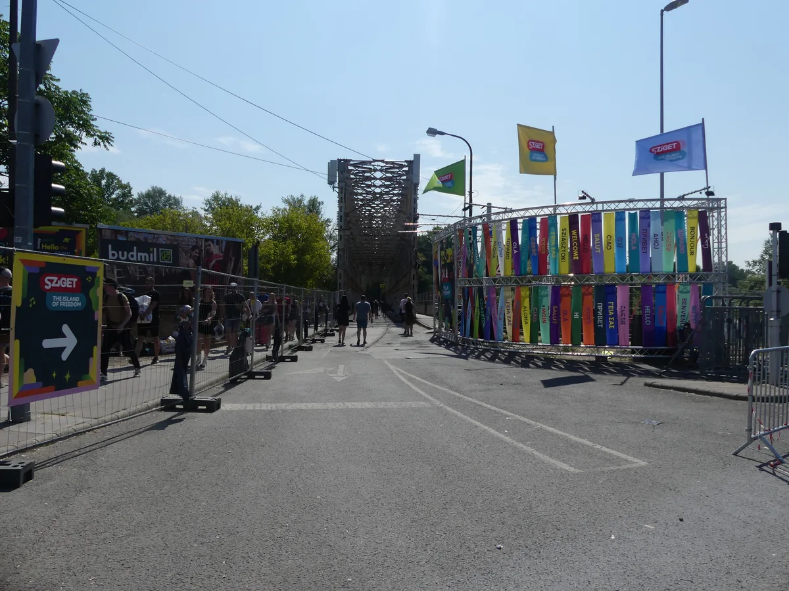
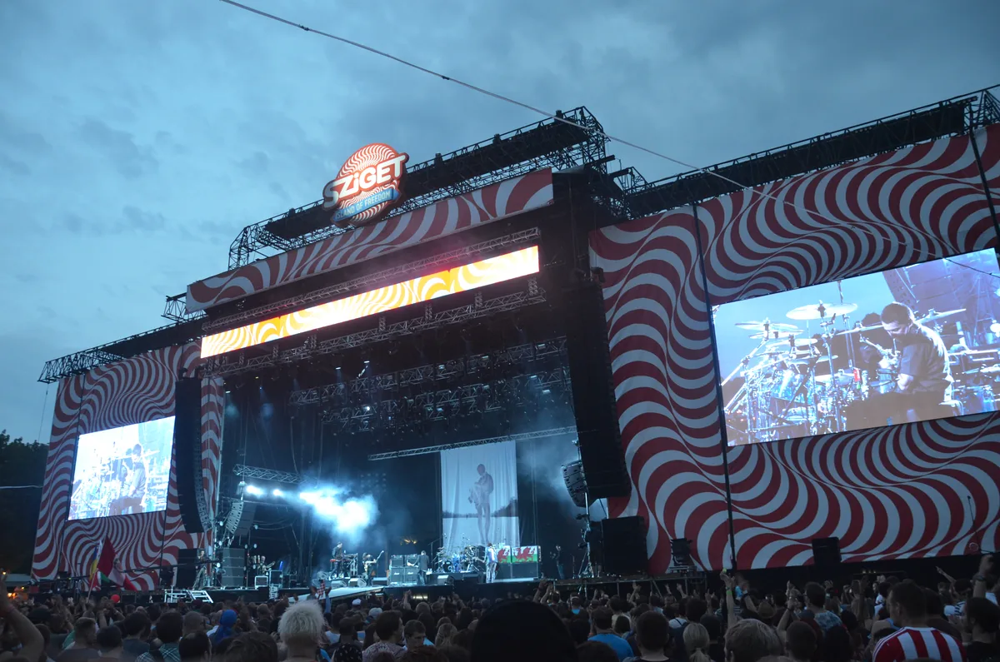

Budapest festival guide
Sziget Festival: A Guide to Budapest's Island of Freedom
Five days on Óbuda Island, with pop, rock and hip-hop beside club stages, theatre, circus and a practical rail link into Budapest.
A festival the size of a temporary Budapest district.
Sziget is large enough to feel like a temporary district of Budapest. The official programme describes more than 1,000 shows across 50 stages, with circus, theatre, installations and workshops beside the music. Sziget is often placed in electronic-festival lists because it has substantial dance programming, but it is a multi-genre festival rather than an EDM event.
Sziget Festival 2027.
Sziget 2027 runs from Tuesday 10 August through Saturday 14 August on Óbuda Island. Programming continues into Sunday morning. The festival has confirmed the dates, while the artist lineup and detailed camping products are still pending.
| Fact | Current information |
|---|---|
| Dates | 10–14 August 2027 |
| Location | Óbuda Island, Budapest |
| Format | Five-day multi-genre music and arts festival |
| 2027 lineup | Not yet announced |
| Nearest rail stop | Filatorigát on the H5 HÉV |
| Camping | Available with qualifying multi-day admission; 2027 products pending |
The island address is Május 9. park, 1033 Budapest. The standard route from central Budapest is the H5 HÉV suburban railway to Filatorigát, followed by a short walk to the entrance. A city stay is therefore practical: you do not need to camp to attend every day.
What Sziget actually is.
The Hungarian word sziget means island, and the festival uses the site as more than a field for large stages. Temporary streets, performance spaces, art and small venues sit between the headline areas. The programme changes each year, but the mix of music and non-music performance is stable enough to define the event.

The scale needs careful language. A 2026 production interview reported an overall site capacity of 85,000, with the main-stage area reduced to 65,000. That is not the same as total festival attendance. The 416,000 figure reported for 2025 counts entries accumulated across six days, not 416,000 people on the island at once.
What music plays at Sziget.
Sziget's main stages book international pop, rock, alternative and hip-hop acts. Elsewhere on the island, electronic programming moves between house, techno, trance and bass music. The Colosseum has been one of its clearest dance-music spaces, built around club sets rather than headline pop production.
Eelke Kleijn’s 2022 Colosseum set and Shimza’s 2025 set show the club-set approach, one melodic and one Afro tech.
That range makes Sziget useful for mixed groups. Someone can spend the afternoon at a band, move into an electronic stage after dark and encounter theatre on the walk between them. It also means the festival will frustrate anyone looking for one tightly defined genre across the entire site.
From Diáksziget to Sziget.
Péter Müller and Károly Gerendai founded the company behind the event in 1993. The first festival was called Diáksziget, or Student Island, and drew 43,000 paying visitors to roughly 200 concerts on two stages. It grew into one of Europe's biggest multi-genre festivals while keeping the island as its permanent setting.

The ownership changed with that growth. Sziget became part of Superstruct, then returned to a management-led structure in 2026. Reporting from June 2026 described management holding 70 per cent and partner businesses holding the remaining 30 per cent. That structure is recent and should be read as a dated snapshot, not a permanent label.
Camping or staying in Budapest.
Basic camping is available to qualifying multi-day ticket holders. Anyone bringing a tent must also obtain the festival's refundable leave-no-tent deposit ticket. The festival offers upgraded camping areas, although the exact 2027 products were not yet published when this guide was checked.
Staying in the city trades immediate access for a bed, a private bathroom and distance from the site. The H5 connection makes that realistic, especially for readers who also want to visit Budapest clubs before or after the festival. Book close to a useful public-transport line rather than choosing accommodation by straight-line distance from the island.
Planning the island.
Expect long walks and changing conditions between exposed daytime areas and crowded night stages. Bring photo identification, use the official ticket shop and check the current prohibited-items list before travelling. Sziget uses cashless payments, but operational details can change from one edition to the next.
The 2027 lineup, opening times, campsite products and access services should come from the festival itself once published. A useful evergreen guide can explain the place and its history; it should not freeze an old timetable into permanent advice.
Sziget Festival FAQ.
When is Sziget Festival 2027?
Sziget Festival 2027 runs from 10 to 14 August on Óbuda Island in Budapest, with the last night continuing into Sunday morning.
Where is Sziget Festival held?
It is held on Óbuda Island in Budapest. The official address is Május 9. park, 1033 Budapest, and the usual public-transport stop is Filatorigát on the H5 HÉV line.
Is Sziget an electronic music festival?
Sziget has extensive electronic programming, including house, techno and trance, but it is a multi-genre music and arts festival. Pop, rock, hip-hop, jazz, circus and theatre also form major parts of the programme.
Is camping included at Sziget?
Basic camping is available with qualifying multi-day admission. Bringing your own tent requires a refundable leave-no-tent deposit ticket. Check the official 2027 accommodation page for the final conditions.
Can you stay in Budapest instead of camping?
Yes. The H5 suburban railway links central Budapest with Filatorigát near the festival entrance, so many visitors stay in the city and commute each day.
How big is Sziget Festival?
A 2026 production interview reported an 85,000 overall site capacity. Multi-day attendance reports count cumulative entries and should not be treated as the number of people present at once.
Sources.
Continue reading
Read next.
 Festivals~7 min read
Festivals~7 min readMonegros Desert Festival 2027: Date, History and Guide
One long electronic event on exposed land near Fraga, with roots in Florida 135 and stages running through the night.
Read article → Festivals~7 min read
Festivals~7 min readBoomtown Festival 2027: Dates, Location, History and Music
A five-day camping festival built as a fictional city, with soundsystem culture, electronic music, live bands and street theatre.
Read article → Festivals~7 min read
Festivals~7 min readEXIT Festival: History, Petrovaradin Fortress and What Comes Next
From a Novi Sad student movement and the Dance Arena at Petrovaradin Fortress to the post-2025 global tour.
Read article → Rave spots~11 min read
Rave spots~11 min readBest Clubs in NYC: From the Paradise Garage to Nowadays
Nowadays, Basement, Public Records, Good Room and Elsewhere: the best clubs in NYC for house and techno now, and the history from the Loft to Output.
Read article →